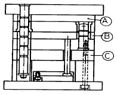
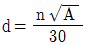
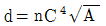
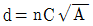
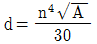
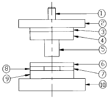
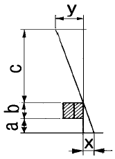
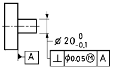

사출(프레스)금형산업기사 (2002-03-10 기출문제)
1과목: 금형설계
1. 다음 성형재료 중 에서 열경화성 수지는?
- 폴리에틸렌 수지
- 멜라민 수지
- 폴리스틸렌 수지
- 메타크릴 수지
(정답률: 83%)

2. 다음 중 사출성형기의 주요 사양에 해당되지 않는 것은?
- 가소화 능력[kg/hr]
- 사출용량[g]
- 쿨링 능력[kcal/hr]
- 사출압력[kg/cm2]
(정답률: 81%)
3. 그림과 같은 핀포인트형 금형에서 A,B,C의 순서대로 명칭이 맞게 기록된 것은? (순서대로 A, B, C)

- 러너스트리퍼판, 스트리퍼판, 받침판
- 받침판, 스트리퍼판, 러너스트리퍼판
- 스트리퍼판, 받침판, 러너스트리퍼판
- 스트리퍼판, 러너스트리퍼판, 받침판
(정답률: 64%)
4. 러너리스 금형에서 러너판 중량이 30 kgf일 때 히터의 용량은 몇 KW 필요한가? (단, 요구 러너 플레이트 온도 t1=180℃, 대기온도t2=20℃, 강의 비열C=0.11 kcal/kgf℃, 온도상승시간T=1시간, 효율η= 0.8이다.)
- 0.77
- 3.19
- 4.25
- 5.24
(정답률: 33%)
5. 사출 성형기에서 수지의 가소화와 사출방식에 의한 분류에 해당되지 않는 것은?
- 플런저식
- 스크류식
- 수직식
- 프리플러식
(정답률: 36%)
6. 다음 중 게이트의 역할이 아닌 것은?
- 수지 온도의 상승
- 재료의 흐름 저항 감소
- 수지의 흐름 속도 증가
- 게이트 절단 용이
(정답률: 43%)
7. 이젝터 핀을 부적합하게 사용하였을 때 일어나는 사항이 아닌 것은?
- 싱크마크
- 백화현상
- 크랙
- 긁힘
(정답률: 46%)
8. 내측 언더컷 처리 금형이 아닌 것은?
- 분할 코어형
- 이젝트 핀형
- 슬라이드 블록형
- 스트리퍼형
(정답률: 52%)
9. 핀 포인트 게이트의 지름(d)을 구하는 식으로 옳은 것은? (단, d = 게이트 지름(mm), A = 캐비티의 표면적(mm2), C = 살 두께 함수, n = 수지 계수 이다.)




(정답률: 35%)
10. 사출금형에서 여러개의 게이트나 구멍 사용 또는 캐비티 내에서 분류 하였다가 합류하는 부분에서 발생되는 트러블 현상은?
- 웰드라인
- 박리
- 제팅
- 싱크마크
(정답률: 85%)
11. 전단가공(blanking)에서 다이와 펀치 사이의 틈새가 적정한 값보다 클 경우에 일어나는 현상으로 옳은 것은?
- 전단저항이 커지므로 프레스의 파손이 적다.
- 날끝의 하중이 적으므로 마모가 크다.
- 캠버(camber)현상이 커진다.
- 파단면의 각도가 점차 작아진다.
(정답률: 55%)
12. 다음은 다이셋트의 종류를 적은 것이다. 이 중에서 정밀금형에 가장 적합한 형태는?
- BB형
- FB형
- CB형
- DB형
(정답률: 65%)
13. 프로그레시브 금형(Progressive die)에서 파일럿 핀(pilot pin)을 사용하는 목적으로 가장 적당한 것은?
- 소재를 눌러주기 위하여
- 가공한 스크랩을 떨어뜨리기 위하여
- 소재의 이송위치를 맞추어 주기 위하여
- 소재가 넓을때 움직이지 않도록 하기 위하여
(정답률: 83%)
14. 다음 중 트랜스퍼 금형내에서 가공하기 가장 어려운 작업명은?
- 펀칭
- U 굽힘
- 드로잉
- 스피닝
(정답률: 64%)
15. 지름이 60mm, 높이 30mm인 원통컵(코너 반지름과 트리밍 여유는 무시)을 1회에 드로잉 할 때 필요한 드로잉률은?
- 약 42%
- 약 58%
- 약 34%
- 약 64%
(정답률: 64%)
16. 굽힘성형금형 에서 동일한 재료를 사용 하였을 경우 스프링 백의 크기에 영향을 가장 작게 주는 것은?
- 윤활유의 사용 유무에 따른 영향
- 소재의 재질에 따른 영향
- 굽힘 반경에 따른 영향
- 굽힘력에 따른 영향
(정답률: 76%)
17. 그림은 프레스금형의 조립도이다. 펀치를 고정시키는 부품은 어느 것인가?(오류 신고가 접수된 문제입니다. 반드시 정답과 해설을 확인하시기 바랍니다.)

- ①
- ②
- ③
- ④
(정답률: 44%)
18. 블랭킹 전단력 40[ton], 판 두께 2mm, k=0.45인 경우의 블랭킹에 소요되는 에너지(E)는 얼마인가?
- 36 Kgf∙m
- 45 Kgf∙m
- 4500 Kgf∙m
- 3600 Kgf∙m
(정답률: 60%)
19. 펀치가 한쪽으로 쏠리는 현상이 발생하면 제품의 전단면 상태가 다르게 되고, 심하게 되면 제품으로써의 가치를 상실하게 된다. 펀치의 쏠림과 가장 관계가 없는 것은?
- 프레스의 강도 불량
- 펀치의 고정 불량
- 금형의 안내 불량
- 금형의 설치 불량
(정답률: 82%)
20. 하사점에서 높은 압력이 작용하고, 코이닝이나 사이징 등의 압축 가공에 적합하며, 냉간 단조에 가장 많이 사용되는 프레스는?
- 너클 프레스
- 마찰 프레스
- 크랭클리스 프레스
- 트랜스퍼 프레스
(정답률: 81%)
2과목: 기계가공법 및 안전관리
21. 풀림 열처리의 목적이 아닌 것은?
- 단조, 주조, 기계가공에서 생기 내부응력 제거
- 금속 결정입자의 조절
- 열처리로 인하여 경화된 재료의 연화
- 담금질한 강철을 적당한 온도로 A1 변태점 이하에서 가열하여 인성을 증가
(정답률: 60%)
22. CNC 공작기계의 프로그램 주소(address)중 반경지령 명령어로 사용할 수 없는 것은?
- I
- J
- K
- X
(정답률: 70%)
23. 블랭킹용 프레스 금형 가공기계 중 다이와 펀치 가공에 주로 이용되는 공작기계는?
- 머시닝 센터
- 프로파일 연삭기
- NC 선반
- 와이어컷 방전가공기
(정답률: 72%)
24. 금형제작에 필요한 모델 재료의 구비조건으로 맞는 것은?
- 가공이 어려울 것
- 팽창 및 수축이 클 것
- 재료비가 싸고 구입이 쉬울 것
- 표면경도가 낮을 것
(정답률: 85%)
25. 방전 가공시 전극재질의 구비조건이 아닌 것은?
- 방전시 안정성이 있을 것
- 가공하기가 쉬울 것
- 전극 소모가 많을 것
- 가공 정밀도가 높을 것
(정답률: 92%)
26. 다음 중 CNC 공작기계의 절삭제어 방식이 아닌 것은?
- 위치결정 제어
- 직선절삭 제어
- 윤곽절삭 제어
- 급속절삭 제어
(정답률: 75%)
27. 유리, 수정, 다이아몬드, 텅스텐, 열처리된 강, 등을 가공할 수 있으며 공작물 표면에 가공변형이 남지 않는 가공법은?
- 방전가공
- 전해가공
- 초음파가공
- 레이저가공
(정답률: 66%)
28. NC가공에서 주축의 회전수를 지정하는 기능은?
- G 기능
- F 기능
- S 기능
- M 기능
(정답률: 90%)
29. 엔드밀의 절삭날은 다음중 어느 연삭기에서 재연삭을 하는가?
- 센터리스 연삭기
- 로타리 연삭기
- 만능원통 연삭기
- 만능공구 연삭기
(정답률: 70%)
30. 지그를 사용하므로서 얻는 좋은점으로 맞는 것은?
- 제품의 검사작업을 줄일 수 있다.
- 제품의 보수작업이 증가한다.
- 숙련공이 필요하다.
- 제품의 생산능율이 감소된다.
(정답률: 78%)
31. 드릴지그 부싱의 종류 중 지그판에 직접 압입 고정하여 지그 수명이 될 때까지 소량 생산용으로 사용되는 것은?
- 고정 부시
- 라이너 부시
- 기름홈 부시
- 템플레이트 부시
(정답률: 80%)
32. 연삭 숫돌의 외형을 수정하여 규격에 맞는 형상으로 만드는 과정은 무엇인가?
- 드레싱
- 트루잉
- 로딩
- 글레이징
(정답률: 64%)
33. M형 버니어캘리퍼스는 본척 눈금이 1mm이며, 부척의 눈금은 19mm를 20등분한 것인데 측정 가능한 최소치는?
- 1/5mm
- 1/10mm
- 1/15mm
- 1/20mm
(정답률: 70%)
34. 담금질한 강의 기계적 성질 변화로 가장 알맞은 것은?
- 연신율 증가
- 전연성 증가
- 경도 증가
- 충격치 증가
(정답률: 62%)
35. 래핑작업에 대한 설명 중 틀린 것은?
- 습식법은 가공면이 아름답고 광택을 내며 거울 같은면이 된다.
- 정밀도가 높은 제품을 얻을 수 있고, 블록게이지, 플러그 게이지 등의 가공에 쓰인다.
- 기계래핑에는 랩 재료로서 주철이 가장 많이 사용된다.
- 주철 랩재로 경화강을 래핑할 때는 래핑류로 유류를 사용한다.
(정답률: 37%)
36. NC 기계에서 기계적 운동상태를 전기적 신호로 바꾸는 회전 피드백 장치는?
- 리졸버
- 서보기구
- 컨트롤러
- 볼 스크루
(정답률: 56%)
37. 다음은 소성가공의 냉간가공에 대한 특징을 설명한 것이 다. 잘못 설명된 것은?
- 가공면이 매끄럽고 곱다.
- 기계적 성질이 좋다.
- 가공도가 크다.
- 연신율이 작아진다.
(정답률: 63%)
38. 호칭 지름 10mm, 피치 1.5mm인 미터 보통 나사를 가공하기 위한 드릴의 지름은?
- 7.5mm
- 8.0mm
- 8.5mm
- 9mm
(정답률: 90%)
39. 바닥 붙임 금형의 형상부 가공에 사용할 수 없는 기계는 다음 중 어느 것인가?
- 콘터 머신
- 모방 가공기
- 조각 가공기
- 방전 가공기
(정답률: 49%)
40. 다음 중 버니어캘리퍼스로 직접 측정이 불가능한 것은 무엇인가?
- 바깥지름 측정
- 단 측정
- 안지름 측정
- 유효지름 측정
(정답률: 71%)
3과목: 금형재료 및 정밀계측
41. 주철에서 기계적 성질이 가장 좋은 흑연조직은?
- 편상흑연
- 괴상흑연
- 구상흑연
- 국화무늬흑연
(정답률: 80%)
42. 강에 함유되어 있는 황(S)의 편석이나 분포 상태를 검출하는데 사용되는 검사법은?
- 감마선(γ)검사법
- 설퍼 프린트법
- X-선 검사법
- 초음파 검사법
(정답률: 36%)
43. 오버핀법이라는 측정법은 다음 중 어느 것의 측정에 관련되는가?
- 기어의 이 두께
- 나사의 유효경
- 수나사의 골지름
- 기어의 피치
(정답률: 64%)
44. 동합금에 Pb=0.5∼4%를 첨가한 합금은?
- 강력 황동
- 쾌삭 황동
- 배빗 메탈
- 델타 메탈
(정답률: 74%)
45. 순철, 강, 주철의 분류 기준은 다음 중 어느것인가?
- 탄소 함유량
- 규소의 함유량
- 온도의 높낮이
- 망간의 함유량
(정답률: 81%)
46. 3차원 측정에서 원의 지름 측정시에 필요한 최소 측정점수는?
- 3
- 4
- 5
- 6
(정답률: 69%)
47. 강의 열처리의 종류가 아닌 것은?
- 계단 열처리
- 항온 열처리
- 연속가열 열처리
- 표면경화 열처리
(정답률: 60%)
48. 성형수지의 공통된 일반적인 성질이 아닌 것은?
- 가볍고 강하다.
- 전기 및 열의 전도율이 좋다.
- 표면강도가 약하다.
- 성형성이 좋다.
(정답률: 57%)
49. 가공경화된 금속을 가열하면 첫째 내부응력이 제거된다. 이런 현상을 무엇이라고 하는가?
- 결정립의 성장
- 용융
- 회복
- 재결정
(정답률: 33%)
50. 선반 주축의 흔들림 검사에 사용되는 검사기구로 다음 중 가장 적합한 것은?
- 시험봉과 다이얼 게이지
- 플러그 게이지
- 수준기
- 직각자
(정답률: 78%)
51. 치우침이란 계측용어의 가장 적합한 설명은?
- 측정치에서 모평균을 뺀 값
- 측정치의 모평균에서 참값을 뺀 값
- 측정치의 모평균과 기준치수의 차
- 측정자가 모르고 저지른 잘못 또는 그 결과로 구해진 측정치
(정답률: 48%)
52. 공구현미경의 부속품 중 나사, 기어, 호브 등을 측정하는 경우 리드각만큼 경사시키기 위하여 사용하는 부속품은?
- 지주
- V형 지지대
- 심출 테이블
- 경사센터 지지대
(정답률: 68%)
53. 측정기의 눈금을 읽을 때 측정자 의 잘못으로 눈금읽음에 오차를 가져오는 수가 있다. 그림에서 y = 5mm, a = 1mm, b = 2mm, c = 250mm일 때 읽음 오차 x는?

- 0.⑤mm
- 0.06mm
- 0.08mm
- 0.10mm
(정답률: 46%)
54. 도면과 같은 제품 4개를 측정한 결과가 답항 가, 나, 다, 라와 같을 때 불합격인 것은?

- 직경 20.00, 직각도 0.⑤
- 직경 19.95, 직각도 0.10
- 직경 19.90, 직각도 0.15
- 직경 20.⑤, 직각도 0.01
(정답률: 59%)
55. 다음 중 한계 게이지(Limit Gauge)의 단일 게이지 방식에 속하지 않는 것은?
- 드릴 게이지
- 반지름 게이지
- 센터 게이지
- 플러그 게이지
(정답률: 48%)
56. 내식성과 내충격성이 크고, 성형성이 다른것에 비해 좋은 종류의 스테인레스강은?
- 페라이트형
- 마텐자이트형
- 오스테나이트형
- 석출경화형
(정답률: 65%)
57. 지름 40mm의 링게이지를 측정한 결과 40.0⑤mm이었다면 오차율은?
- 1.25 × 10-1
- 1.25 × 10-2
- 1.25 × 10-3
- 1.25 × 10-4
(정답률: 53%)
58. 플라스틱 재료의 특성으로 옳지 않은 것은?
- 가볍고 강하다.
- 표면의 경도가 약하다.
- 열에 약하다.
- 성형성이 불량하다.
(정답률: 78%)
59. CM 형 버니어캘리퍼스에 대한 설명으로 틀린 것은?
- 내측, 외측용 조는 같은 방향에 있다.
- 내측, 외측, 깊이 측정용이다.
- 미동조절장치가 있다.
- 슬라이더는 홈형이다.
(정답률: 43%)
60. 아연합금의 다이캐스팅시 입계부식을 일으키는 주요원인은?
- 유동성이 나쁘기 때문에
- 가공성이 나쁘기 때문에
- 순도가 나쁘기 때문에
- 주조온도가 낮기 때문에
(정답률: 48%)